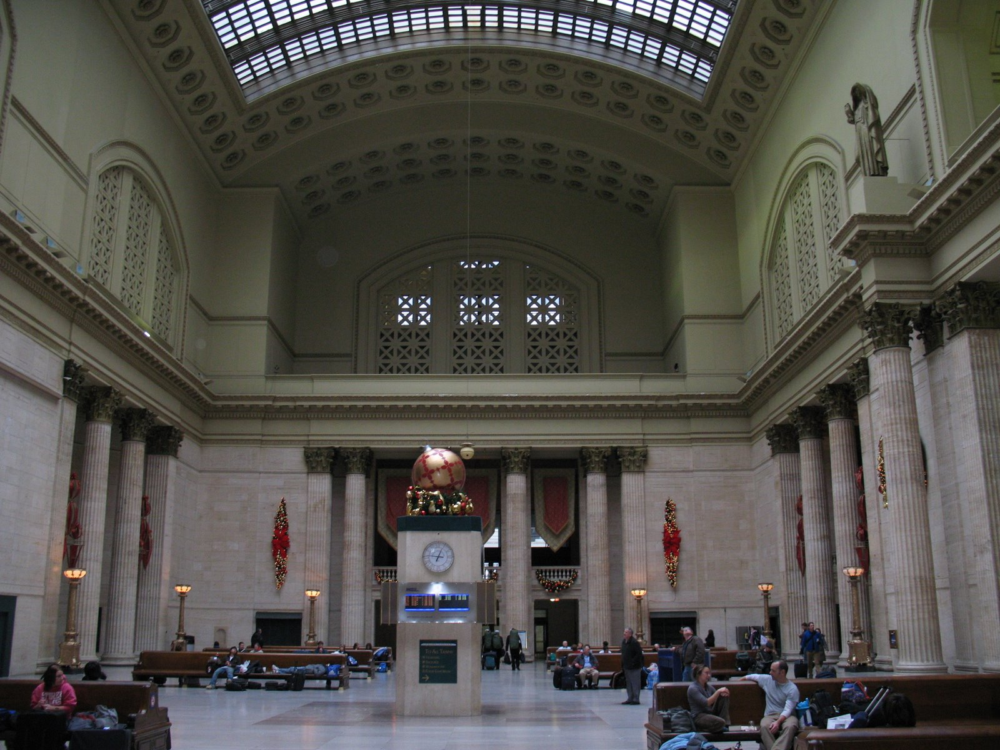
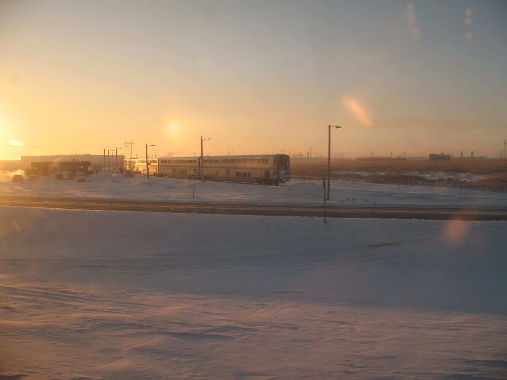
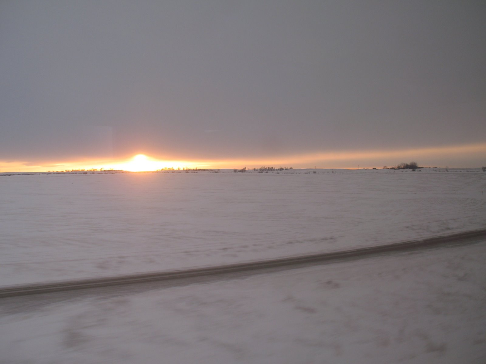

I’ve ridden 117,534 miles on Amtrak, or almost five times around the globe. 111,519 of those miles are since January 4, 2009, when I took the Empire Builder from Chicago to Portland for a Moodle Hack/Doc Fest at Reed College. We encountered snow and ice and bad-ordered equipment. I took one of my favorite photographs of all time. We hit Spokane at least twelve hours late and had to be bussed to our final destinations. I had a blast and the rest is history.
This account is based on my contemporaneous notes in 2009; all the pictures were also taken in 2009 with my Canon PowerShot. See the 2009 Reed gallery for all of them.
Beginnings
Although I made many train trips in Europe and Japan, I had limited experience with Amtrak. I had taken two trips with my parents in the 1980s: one in 1984 to Toronto on the International and one in 1987 to San Francisco on the California Zephyr. The latter was my only experience with an overnight train trip. I was 4. I had made several coach trips while in college, all within the state of Michigan.
By 2008 I’d gotten idea I wanted to start traveling by train instead of flying. I was working as a desktop engineer/web developer at Kalamazoo College. I wrote a memo explaining the various benefits of train travel: cost, opportunity to get work done, environmental effects. I requested “alternative transport” for future conferences. I also submitted an itinerary showing the lower costs of taking the train (in coach) to a forthcoming conference at Reed College in Portland, Oregon.
At the time I’d made a couple of business trips. I didn’t do the bookings; those were the responsibility of our department secretary (a wonderful, kind-hearted woman). I would learn about my flight and hotel arrangements when I started getting confirmation emails. The conference began in early January 2009. In late December 2008 I drove out to Boston (which is a whole other story), and then on
An email from work
I was sitting in my sister’s living room, near the wood stove, reading email. It was December 22, 2008. I had a new email: from Amtrak, with a booking confirmation for Kalamazoo-Chicago-Portland, a journey of some fifty hours. To the best of my recollection this is when I learned that someone read my memo and granted my request.
Um. How does someone travel by train again?
Preparations
With a few weeks to prepare I began browsing around forums to get a better sense of what I’d gotten myself into. An email I sent to Amtrak customer support shows how out of my depth I really was:
I will traveling from Chicago to Portland on the Empire Builder in coach class. I have a
few questions about my accommodations. (1) Will there be a power outlet at my seat.
(2) Do I have access to the dining car and (if yes) about how much does a typical meal cost. Thank you for your time.
I’ve never encountered an Amtrak train, then or later, without seat power. At the time I traveled coach class passengers were welcome in the dining car. Sleeping car passengers had priority. Median price point for dinner was $20.
I decided to bring some provisions of my own on board: granola bars, oranges, and a giant water bottle (originally purchased at a Belgian gas station in 2003). Anticipating no internet access for days I loaded music on my laptop.
Kalamazoo-Chicago
That morning it was icy and foggy in Kalamazoo, but the Wolverine was right on time. It looked beautiful, coming out of the mist. The morning Wolverine made no intermediate stops west of Kalamazoo. My seatmate was a young man named Jason, from Jackson (Spring Arbor), on his way to a conference in Minneapolis. He too would be on the Empire Builder. It seemed fortuitous but in fact I never saw him again after we reached Chicago.
I tried connecting to the various wireless networks we passed but without success. “Wartraining” only works when you’re stopped. I listened to Die Meistersinger and watched the world go by. I recognized New Buffalo, but the lady across the aisle (with the two kids) had to identify Michigan City for me. About Gary, of course, there was no mistake. We passed some freight trains, and for a long time played tag with the South Shore Line, though I never saw a train on it. The track density in the approach to Chicago is unbelievable.
Chicago

We were early into Chicago; Jason and I went up to the food court above the concourses and grabbed food at a Chinese place. This was my first visit to Union Station so I walked around to get my bearings. I sat in the Great Hall for a while. There was no publicly-accessible wifi at Union Station so fired up Delerium and played Heroes of Might and Magic III. Aside: this was mostly “Chimera”, which I still code to.
Meanwhile, a minor drama was playing out. By 1 PM no track had been announced. Inauspiciously, our train had two equipment problems coming out of the yard: our dining car was bad-ordered with a refrigeration problem and had to be replaced, and our original consist was short one coach. Not knowing any of this we passengers gathered in the North Concourse and waited. Union Station is an intolerable place to wait. Finally, over two hours late, we departed.
On the Empire Builder
The first thing I noticed aboard my coach is how much space I had. A Superliner coach has two stories, and carries 62 passengers on the second story. Seat pitch is 50-52 inches. You’ve got leg rests that swing up from below your seat and footrests that swing up from the seat in front of you.
I had my first exposure to Amtrak conductor humor as we approached Milwaukee:
Ladies and Gentlemen, Milwaukee is our next stop. Milwaukee is a smoke stop. Remember, when you hear the two whistle blasts, please get back on board. We have left people behind. We want you to continue your journey with us. Again…
Dinner was by reservation; the attendant came through the car to take them. Mine was for 7 PM, and I was seated with a family from Australia who were touring the United States by train. I spent close to an hour and a half with them, over a dinner of herb-roasted chicken and garlic mashed potatoes accompanied by a decent Riesling.
I think that I slept about three or four times. I vaguely remember being awake for part of the stop in the Twin Cities, long enough to sort of greet a new seatmate (this one female). Yet I have this notion she boarded earlier, perhaps at Winona. Regardless, I lost her at Fargo, and picked up some new guy whom I haven’t met since we both fell asleep. I think I’m rested. My last dream was bizarre–various characters from Lord of the Rings trying to destroy the One Ring, except that Mordor was now suburbia (shopping centers, gas stations, etc). Then I woke up and trundled down to get breakfast.
Devils Lake

Breakfast is first-come first-serve. I sat with a guy named Allen, who’s traveling with his wife and son back to Minot, North Dakota. We had a good talk. I had a three-egg omelet, with grits and a croissant. The most important thing was the coffee. I wasn’t impressed with the omelet, and that remains true to this day. The grits were fine though. Allen, who’s from the north, couldn’t understand the grits thing. As my father would say: “Y’all want grits?”
Already four hours late, we were held up in Grand Forks, North Dakota, to let an ever later eastbound Empire Builder pass. There was snow everywhere, and the temperature was bad enough the Amtrak warned the smokers to be careful. We were close enough to somebody’s house for me to get on their WiFi and send some emails.
We spent several hours in Devils Lake, North Dakota, because of a frozen switch and problems with one of our locomotives. Harsh weather doesn’t begin to describe it. I learned later that winter weather on this route was one of the design constraints for the Superliner. I believe it. It was in the lounge car, idling at Devils Lake, that I first encountered that most dreaded passenger, the Philosopher. My notes at the time say this: “And now they’re talking about Jesus and yoga and other bullshit in the Lounge car. You jerks. I’m trying to look out the window, not achieve illumination.”
Dog-caught
Near Leeds, North Dakota, which is not a station stop, I had another new experience. Our train crew hit the 12-hour limit and had to be relieved. The current crew joined us in Minneapolis/St. Paul, and judging from the timetable should have turned things over in Minot after a stint of 9 hours or so. Plans change. We were about 80 miles from Minot and had to wait for the relief crew to come to us.
When a crew hits the limit it has “outlawed.” When a relief crew comes out to take over from the outlawed crew it’s called “dog-catching.” When we start moving again at 1:51 PM Central Time we about seven hours late from the following causes:
- Bad-ordered consist in Chicago: needed a new dining car and an additional coach
- Waiting for the eastbound Empire Builder to pass in Grand Forks
- Bad-ordered locomotive at Devils Lake
- Frozen switch at Devils Lake
- Problem with the parking brake of the replacement engine
- Crew outlawed west of Devils Lake
My notes at the time: “Goddamn, that’s some shit.” I had no internet access most of the time so I had a spreadsheet where I was calculating our arrival time based on past performance and dead reckoning.
Experiments in photography

It was between Rugby and Minot that I first experimented with taking pictures from a moving train. I wrote at the time that “I can take pictures while the train is moving and not suffer too much blurring, so long as I aim ahead/behind.” This was with my old Canon PowerShot A640. Later, with my phone, I developed the technique of placing my phone flat on the Lexan window.
This part of the trip you follow US-2. I timed the milepost markers and determined that we were doing about 75 MPH, and that we were 175 miles from Montana. We finally made it to Minot at 3:22 PM, and everyone got off to stretch and/or smoke.
The sun set west of Stanley. This is what I wrote at the time:
I can just see a glow on the horizon out my window. Never got a good shot–too distant, and we kept ducking behind hills. I’ll keep an eye out for a good silhouette shot.
…
Most interesting right now is that the sun is setting out my window. In the last few minutes it has broken through the clouds. I’ve tried to photograph it but capturing a light source is tough and I’m worse than amateur.
When I reviewed my shots later I realized that in fact, I had taken one of my favorite pictures. It shows the sun on the horizon, halfway down, beams shooting to both sides. It’s not perfect–you can see some reflection near the sun at left. Photographing a light source behind a window on a moving vehicle, without special equipment, is a tall order. I’ve taken several such “sunset” shots since.
Williston
The bleak and barren landscape made a real impression on me. To paraphrase Arthur C. Clake in 2010, what is it, to live in these cold wastes far from the sun? I was reminded of my ferry trip in 2003 from Belgium to Scotland, crossing the North Sea. Of standing out on deck as we stood out to sea. Being out in the middle of the North Sea with no company save the occasional freighter sliding in and out of the mists (and me without my camera just then). The feeling that the Earth is very large and man is a very small thing upon it. The locals I talked to on the train all said they wouldn’t have it any other way. They love the quiet–the distance. No one takes much notice of you out here.
My AT&T flip phone had absolutely no signal in western North Dakota. We passed through lots of small railroad towns, completely snowed in. We entered Montana in complete darkness. Before dinner I spent a long time talking to guy on his way back to Berkeley (catching the Coast Starlight in Portland) who does some IT on the side. We traded horror stories and had a good time. Back in my car, with whiskey in hand, I finally chatted up the guy across from me who’s been there since Chicago. Turned out he’s a Western Michigan grad ('00) doing hydrology at Oregon State so we talked a good long while. While waiting for dinner apassenger came by with a tub of candy canes, bless her soul.
Amtrak broke out the emergency rations for dinner; I think this is because we hadn’t visited the commissary at Havre. This was stew, mixed vegetables, and mashed potatoes. I’ve had that one other time since, on a badly-delayed Lake Shore Limited. The train was restocked in Havre, and I didn’t bother getting off. It would take later trips for me to develop the concept of the Havre Challenge.
Day 3
Day 3. I woke up leaving Whitefish. When we left was an interesting question. My cell phone hadn’t had signal in a long time, so I couldn’t say which time zone it was observing. This quandry inspired the Where are we? When are we? event of the Amtrak Olympics. Our arrival in Libby let me finally fix where and when we were, and confirm that we were at least nine and a half hours late. Had a complimentary breakfast of pancakes, bacon and coffee in the dining car.
It started snowing pretty hard in Idaho. Amtrak annulled the train in Spokane. We all got off there and boarded buses which took us to our individual destinations. I passed out the last of my oranges on the bus. I think I eventually got to Portland around 7-8 PM, or about half a day behind schedule.
Reflections
I realize that for just about anyone this sounds like a terrible trip. Multiple significant delays, degraded food service, bad weather. I had a blast. I met a bunch of people and had all kinds of new, fun experiences. I took my first “sunset” photograph. Learned about conductor humor, smoke stops, outlawed crews, and emergency provisions. My recollection is that despite everything it was a happy train. That was the vibe. That summer I took the Lake Shore Limited out to Springfield, Massachusetts, for another conference. The fall, I took the Capitol Limited down to DC for another. I’ve since made a half-dozen trips on the Empire Builder, in both directions, and never been anything like as late. I do admit that I’ve never had the need, or the courage, to do it again in the dead of winter. It’s cold up there folks.